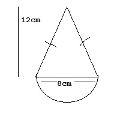
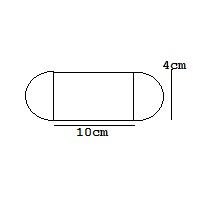
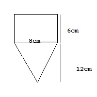
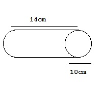
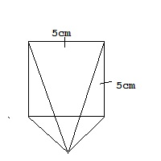
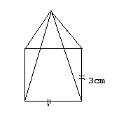
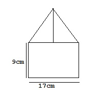

17th Mar, 2024 :: Sunday :: (Revision) "Afternoon"
-
A car runs with speed of 39 miles/hour for 4 hour and 20 minute. Find the total distance travelled by car.
-
Find the range:
5769, 3392, 5040, 779121, 6791
-
Find the mean of the following data:-
| Students |
0 - 4 |
5 - 9 |
10 - 14 |
15 - 19 |
| Frequency |
7 |
2 |
5 |
3 |
-
Find the total value in kilometer:-
32⁄3km, 3.401 km, 1256 m, 12550 cm, 645.326 m
-
Find the total area from the given figure: (Π=3.14)
- 
- 
- 
-
Find the actual distance in km if the map distance is 12cm in the map of 1:35000. (If necessary round up in two decimal places)
-
There are Grey, Blue and Red balls in the ratio of 5 : 3 : 2. If there are 200 grey balls.
- Find the total numbers of balls.
- If each ball was sold at €1.75, then find total cost.
-
The fixed price of hiking is €74 and the hiker used additional 7 bags which cost €17.40 per bag. Find the total price of hiking.
-
Find the volume of given cylinder. (Π=3.14)

-
Find the distance between A and B in meter.
| A |
B |
| 1.5m |
11⁄2m |
| 985m |
5.75m |
-
The booking charge of 6 tent is $50 and the rate for a tent is $12.50 per day. Ram used 6 tents for 8 days then find the total cost paid by Ram.
-
The distance between 2 places is 28km. If it is represented in a map scale of 1:140000. Find distance in cm.
-
A bus starts its journey at the speed of 56mph. It reaches its destination 238 miles far at 2:45 pm, at what time did it start journey?
-
Find the height of all triangle from given figure:-
- TSA = 585cm2
- TSA = 87cm2
- TSA = 255cm2